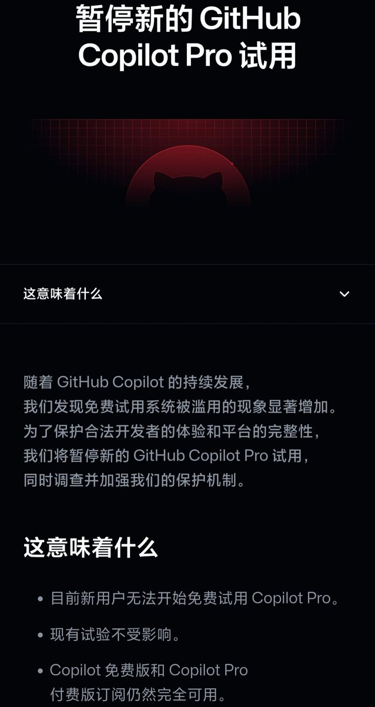
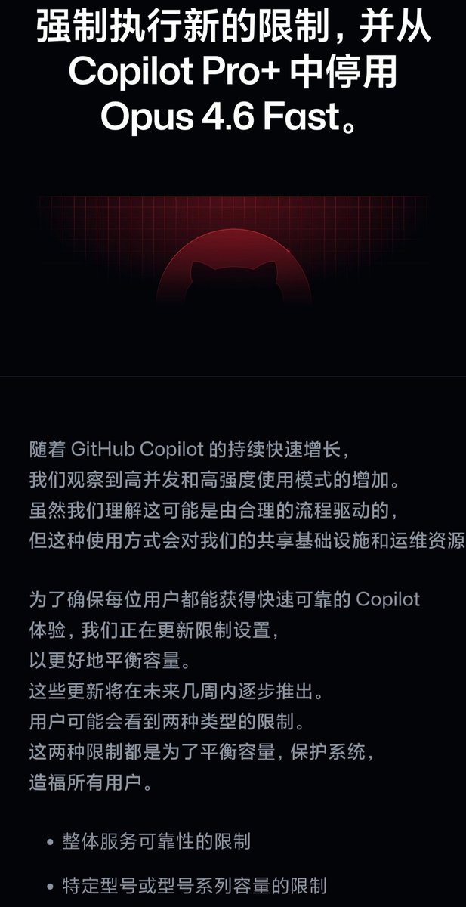

奶昔🥤
@realNyarime
继GitHub Copilot暂停试用，Pro+所独占的Opus 4.6 fast也停了，看来号商不仅批量刷免费试用账号后又研究出破解计费的方法
看了下计费逻辑是「按次收费」，只有点发送那一下才扣除次数，要做的就是不断加任务
现在Pro+已经开始限速了，后续应该会采取减量的措施以节约当下token的成本，保不准出一个Max卖200刀都不一定
这波AI狂欢能用一天算一天吧，号商们也是有实力的，成功的把GitHub也整玩不起了

